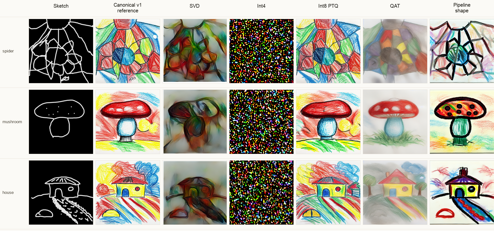
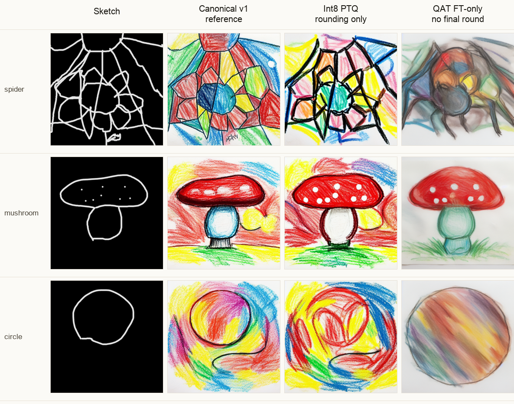
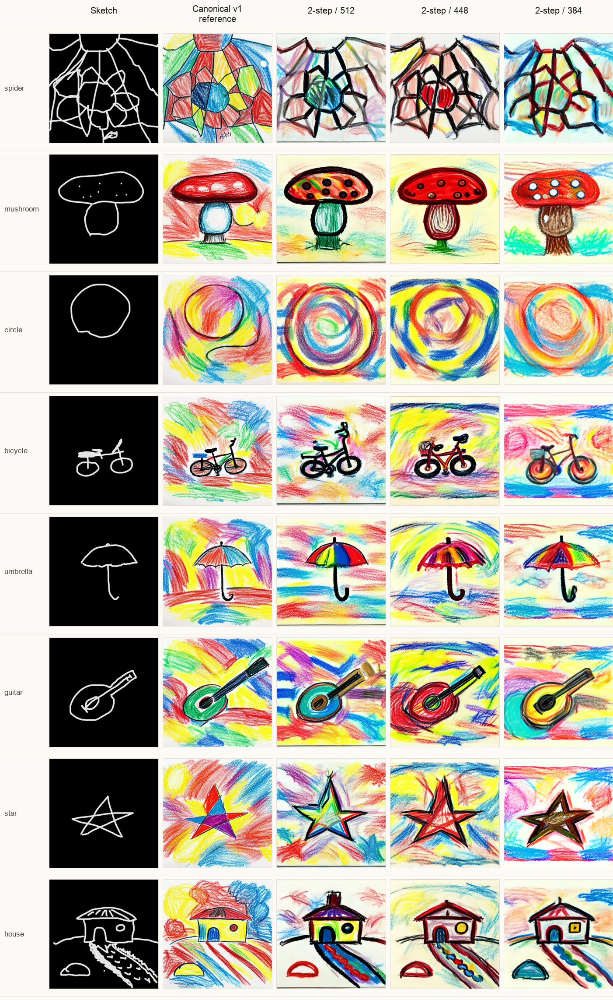

Research note - Machine learning - June 2026
CLIP Said Yes. The Crayon Said No.
Which compression and runtime simplification strategies keep object identity and crayon style in a sketch-guided image-generation pipeline?
The first instinct was to make the model smaller. Singular value decomposition, 4-bit quantization, 8-bit quantization, quantization-aware training. All the normal tools were on the table. The catch was the product promise: a child's drawing should come back as the same drawing, rendered in wax crayon.
The baseline was v1: Stable Diffusion 1.5 as the image generator, ControlNet Scribble as the sketch guide, a rank-16 crayon LoRA as the style adapter, and latent consistency model sampling as a shortcut with fewer generation steps. The crayon LoRA was trained on 53 images. It passed the automatic score gates: CLIP style 25.2 and CLIP class 25.5. The visual grid became the real reference.
I. The Comparison
Five strategies, one visual standard
| Strategy | What it tried | What happened | Decision |
|---|---|---|---|
| SVDsingular value decomposition | Split attention layers into smaller pieces | CLIP recovered after fine-tuning. The images became muddy and painterly. | Reject |
| Int44-bit quantization | Make the exported model smaller | The low-level math check passed. The size and final-image checks failed. | Reject |
| Int8 PTQ8-bit post-training quantization | Quantize without retraining | The look stayed close to v1. It was the cleanest compression result. | Qualified |
| QATquantization-aware training | Train around 8-bit rounding noise | CLIP passed. The medium shifted from crayon toward pastel. | Reject |
| Pipeline shape | Change steps, resolution, and VAE | Several settings passed the automatic checks. The side-by-side grid showed which one still kept the sketch readable. | Accept |

II. Fine-Tuning Moved The Style
Quantization-aware training moved the style; 8-bit rounding did not
The surprising number was not a CLIP score. It was the image-drift split: 0.019 from 8-bit rounding versus 0.234 from fine-tuning. Rounding barely moved the image. Fine-tuning moved the medium.

That changed the interpretation of the compression ladder. QAT sounded like the careful path: expose the model to quantization noise, let it compensate, then export. In this pipeline, compensation rewrote the style. The class still read correctly. The medium changed.
III. Changing The Run Was Safer Than Changing The Weights
Spend quality headroom, then check the grid
Pipeline shape was less glamorous than compression. Fewer steps, different resolution, full VAE versus tiny VAE. But it asked a better question: how much headroom did v1 have before the drawing stopped feeling like itself?

IV. What Holds
Automatic scores filter. Visual grids decide.
CLIP was useful. It caught obvious failures and kept the comparison cheap. It was not the judge. The judge was the grid, because the promise was not a high CLIP crayon score. The promise was: my drawing came back as crayon art.
| Check | Gate | Observed | |
|---|---|---|---|
| Baseline quality | CLIP style ≥ 22, CLIP class ≥ 24 | v1 passes | PASS |
| SVD recoverysingular value decomposition | preserve crayon | muddy, painterly | FAIL |
| Int8 PTQ8-bit post-training quantization | preserve v1 look | closest compression result | QUALIFIED |
| QATquantization-aware training | preserve crayon after training | pastel drift | FAIL |
| Pipeline shape | grid still holds | qualified accept | PASS |
The answer is narrow, and that is why it is useful. In this pipeline, quality-preserving compression was harder than the automatic scores suggested. PTQ preserved style better than QAT. SVD cut the model in the wrong place. Pipeline-shape changes were easier to defend because the grid kept the product promise visible.
Limits. One pipeline. A 53-image style dataset. A small fixed evaluation set. Visual grid review, not a formal child study. Latency numbers belong only inside matching hardware and protocol groups. The result does not say compression cannot work. It says the grid has to say yes too.
Technical record Baseline: Stable Diffusion 1.5 (SD1.5) image generator + ControlNet Scribble sketch guide + latent consistency model (LCM) sampling + rank-16 low-rank adaptation (LoRA) crayon adapter. Strategies tested: singular value decomposition (SVD), 4-bit integer (int4) conversion, 8-bit integer (int8) post-training quantization (PTQ), 8-bit quantization-aware training (QAT), and pipeline-shape sweeps over steps, resolution, and variational autoencoder (VAE) choice. Source run journals remain the source of truth.